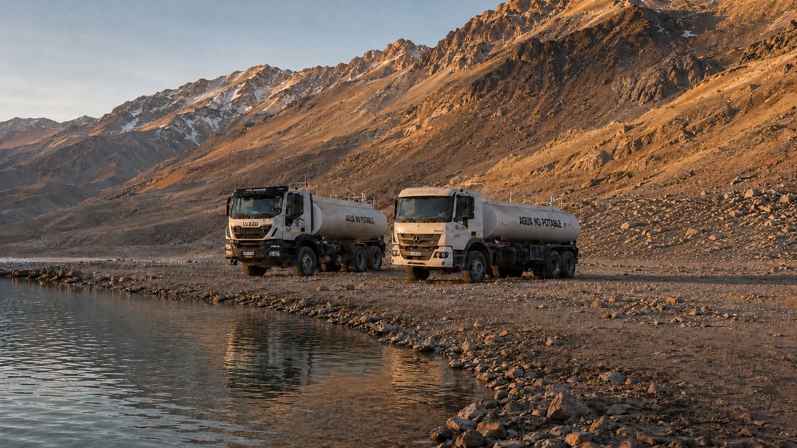
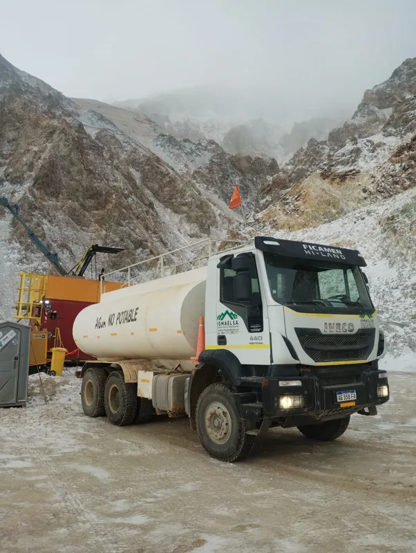
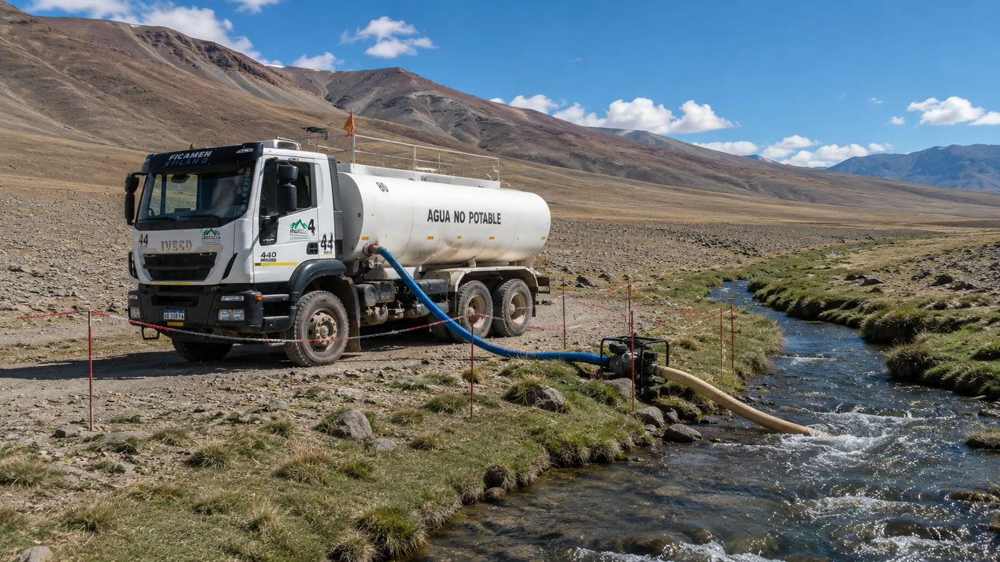

Transporte de agua para minería en San Juan
El agua en el frente, en tiempo y forma, para que la operación no se detenga. Transportamos y abastecemos agua con aguateros propios —perforación, campamentos y riego de caminos— incluso en los accesos más exigentes de la cordillera sanjuanina. Más de 20 años en alta montaña, con bases en Rawson y Calingasta.

Agua en el frente, cuando y donde se necesita
En un proyecto minero de cordillera, el agua no es un detalle logístico: sin ella se frena la perforación, no funciona el campamento y no se puede controlar el polvo de los caminos. En zonas donde no hay red ni fuentes cercanas, el abastecimiento depende por completo de un aguatero que llega en tiempo y forma, en cualquier condición.
ISMAEL S.A. opera aguateros propios —de 9.000 a 20.000 litros de capacidad— en frentes de exploración y perforación de San Juan, con provisión programada o bajo demanda. Al ser flota propia y operador local, controlamos la disponibilidad de cada unidad y respondemos sin depender de terceros ni de movilizaciones desde otras provincias.

Provisión continua a frentes de perforación
Las campañas de perforación consumen agua de forma sostenida y no admiten cortes: una parada por falta de abastecimiento es tiempo de equipo y de cuadrilla perdido. Coordinamos la provisión al ritmo de cada sondaje, con viajes programados y capacidad de responder a picos de demanda.
Trabajamos sobre rutas de montaña y caminos no convencionales, a la altura y en las condiciones de frío y aislamiento propias de los frentes de la Cordillera de los Andes.
El aguatero también capta en la fuente
Además de trasladar agua, nuestros equipos captan directamente desde ríos y cursos habilitados con motobomba propia, cuando el proyecto lo requiere y con los permisos correspondientes. Es un paso menos en la cadena: la misma unidad que carga es la que entrega.
Esto reduce los tiempos muertos de un abastecimiento que depende de un tercero para la carga inicial, y le da al operador control de punta a punta del recurso.

Para qué usamos el agua en campaña
El mismo servicio de aguateros cubre las distintas necesidades de agua de un proyecto, desde la perforación hasta el mantenimiento de los caminos de acceso.
Agua para perforación
Provisión sostenida a equipos de sondaje, ajustada al avance de cada campaña y a las ventanas de operación del frente.
Abastecimiento a campamentos
Agua para las instalaciones de faena y los módulos habitables en puntos de operación alejados de la red.
Riego y supresión de polvo
Riego de caminos de acceso y huellas mineras para el control de polvo, clave para la seguridad y la visibilidad en ruta.
Provisión en zonas aisladas
Entrega en frentes de difícil acceso donde el abastecimiento depende por completo de la logística de última milla.
Que el frente nunca se quede sin agua.
Seis capacidades de aguatero para ajustar la provisión a cada operación. Una variable menos de qué preocuparse en el frente.
Por qué contratar el aguatero con un operador sanjuanino
La diferencia entre un aguatero local y uno de otra provincia se mide en horas de movilización y en quién responde cuando el frente se queda sin agua fuera de horario.
Aguateros propios, con respaldo
Flota propia de aguateros de 9.000 a 20.000 litros. Si una unidad falla, sale otra: el agua sigue llegando al frente.
Presencia local en San Juan
Bases en Rawson y Calingasta: movilización en horas, sin depender de operadores de otras provincias.
Choferes acreditados para transporte de agua
Conductores certificados, con experiencia real en el manejo de cisternas en rutas de montaña y acreditaciones reconocidas por la OAA.
Seguros de carga líquida al día
ART, responsabilidad civil y seguro de carga vigente para el transporte de agua.
+20 años en alta cordillera
Más de 20 años en rutas de montaña, frentes de perforación y proyectos de exploración en San Juan.
Trazabilidad de cada carga de agua
Monitoreo GPS de la flota: sabés qué aguatero salió, a qué hora y cuándo llegó al frente.
¿Necesitás abastecimiento de agua para tu proyecto?
Contanos la zona de operación, el consumo estimado y las fechas de campaña. Te respondemos con una propuesta concreta de abastecimiento.
Ver todos los servicios →